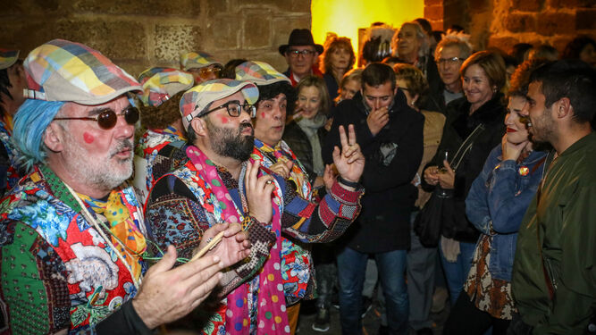
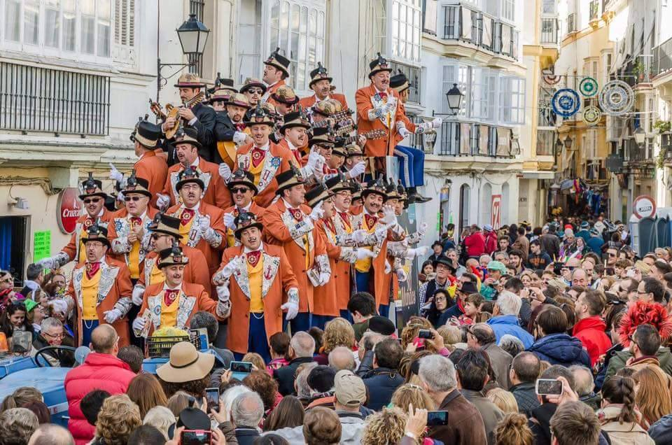

En esta página podrás conocer lo que es el carnaval en la calle
El carnaval de Cádiz en la calle ocurre durante los días siguientes a la final del concurso, la cual se suele celebrar el viernes anterior al miércoles de ceniza.
Durante estos días el aficionado puede disfrutar de todas las agrupaciones del concurso más aquellas que son consideradas como 'ilegales', aparte de disfrutar también
del carrusel de coros y de la típica cabalgata
Agrupaciones Ilegales
Las llamadas agrupaciones “ilegales” o, también denominadas, “familiares”, nacieron hace varios años como una forma más de participación popular en el Carnaval.
Multitud de charangas compuestas por grupos de amigos, compañeros de trabajo, peñas, familias, etc. rivalizan con las agrupaciones “oficiales" en sus repertorios

Carrusel de Coros
Durante este carrusel los coros cantan sobre bateas y ofrecen tangos a los miles de personas que abarrotan las calles, ocurre el primer domingo de carnaval alrededor
de la 1 de la tarde. Su éxito estos últimos años está haciendo que se abran nuevos recorridos por otras calles y otras plazas de la ciudad durante la semana

Cabalgatas
Dos son las cabalgatas que se celebran durante los carnavales.
La del primer domingo recorre la avenida de entrada a la ciudad y congrega a miles de visitantes en un espectáculo lleno de colorido y alegría. Se ha calculado que
más de 100.000 personas, entre gaditanos y foráneos, invaden la avenida de acceso a la ciudad, convirtiéndose, muchas veces, en personajes activos en la representación.
Este incesante desfile de carrozas, grupos de disfraces y agrupaciones, necesita más de 4 horas en recorrer los aproximadamente 3.500 metros que abarca su itinerario.
La segunda cabalgata, conocida como la “Cabalgata del Humor” se celebra el último domingo y recorre el casco histórico, con la más bullanguera muestra de disfraces y participación
callejera que pueda verse